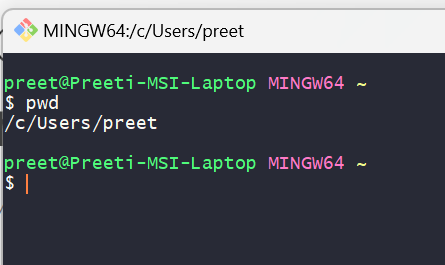
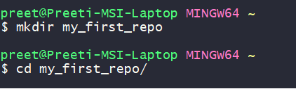
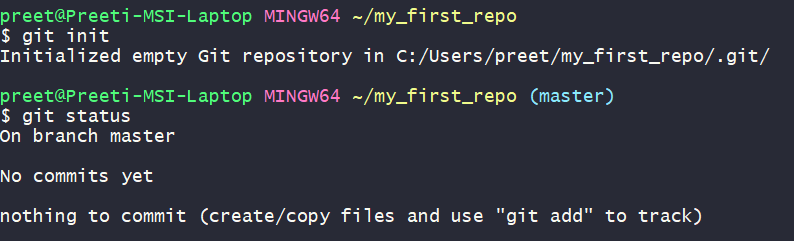
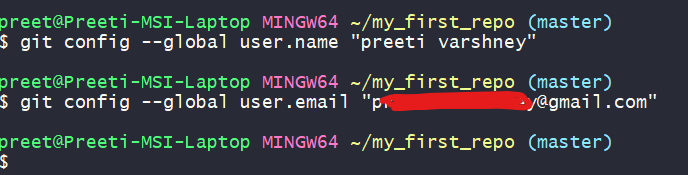
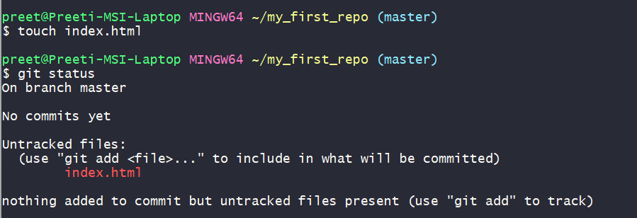
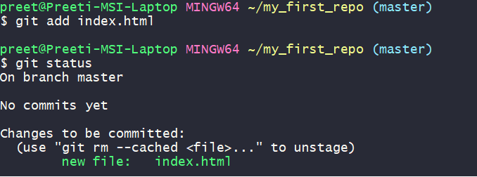
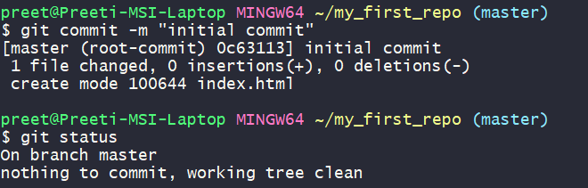

Steps to create a website on github
- Setup GitBash on local computer and create website files.
- Create a Github account and setup a repository.
- Move the files from local Git to Github using drag and drop or GitBash
- Access the website from the browser
Setup GitBash on local computer and create website files.
Git is a version control system for tracking changes in the source code during software development. Bash also called Bourne Again Shell is an implementation of shell that allows you to perform many tasks efficiently like create,delete, update directory etc.
GitBash is an application installed locally to interact with git using the shell commands. Follow the steps below to setup GitBash
- Go to the GitBash website and download gitbash.
- Install gitbash choosing the default options.
- Once installed, you get a Git Bash and a Git GUI.
- Open the Git bash and enter command 'pwd' (print working directory). This shows your default home directory where you are.

- To create a new repository space, create a new directory using the command
mkdir name_of_your_repo

- Navigate to the newly created directory using
cd name_of_your_repo
- Initialize an empty git repository using command
git init
This will give message initialized empty git

- Check the status of the repository by doing
git status
- In order to create a username and email for the user working on gitbash, use the following commands
git config --global user.name "your username"
git config --global user.email "your_email"

- Create a new file index.html by using command
touch filename
and then check the status by using command
git status
Filename in red means file is staged but not yet added or committed to the repository.

- Now add the file to the git repository by using command
git add filename
and check the status using
git status
Now you can see the file name has changed to green which means it is added but is yet to be committed.

- Commit the changes to the file using command
git commit -m "message to give details of the commit"
(note that if you need to remove the file from staging you can use the command git rm --cached filename but we will not do that yet as we don’t want to remove the file)

- You can check the status again using
git status
- The file has been added and committed and there is no other commit changes.
Create a Github account and setup a repository.
- Go to github.com and login with your existing username/password. If you don't have a username, create one using the signup link and follow the steps.
- Go to your profile icon on the right-hand top corner and choose 'Your Repositories' and then click on the 'New' Button.
- Create a new repository. A special repository with the name your_username.github.io is automatically served as a webpage so you can choose to create a repository with that name.
- Once you specify the name of the repository, give it some description and mark as public if this repository is to be accessible to everyone. Also, you can check the 'Add a README file' in case you want to add more details about this project. Once you click on the Create repository button, a new repository is created., it will show a different page with the contents of the repository which is empty right now.
Move the files from local Git to Github using drag and drop or GitBash
There are 3 options to add content to the repository
- Upload files - To use this option, edit and update your web files like html/css/javascript/media locally using Visual Studio editor or any other code editor.
Once ready, go to the repository on github and go to Add file -> Upload files option. Drag the files from the local filesystem onto the space where it says drag files here...
- Or Creating files directly on the github website using the online HTML editor.
Git bash commands can also be used to directly add a local repository to the GitHub. See detailed instructions HERE
Access the website from the browser
Open a browser and navigate to the website your_username.github.io. You should see the index.html that you created